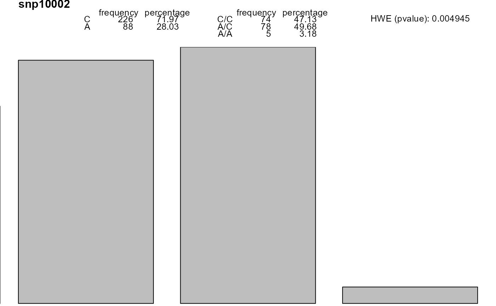

Convert columns in a dataframe to class 'snp'
setupSNP.RdsetupSNP Convert columns in a dataframe to class 'snp'
summary.setupSNP gives a summary for an object of class 'setupSNP' including
allele names, major allele frequencie, an exact thest of Hardy-Weinberg
equilibrium and percentage of missing genotypes
Arguments
- data
dataframe containing columns with the SNPs to be converted
- colSNPs
Vector specifying which columns contain SNPs data
- sort
should SNPs be sorted. Default is FALSE
- info
if sort is TRUE a dataframe containing information about the SNPs regarding their genomic position and the gene where they are located
- sep
character separator used to divide alleles in the genotypes
- ...
optional arguments
Value
a dataframe of class 'setupSNP' containing converted SNP variables. All other variables will be unchanged.
References
JR Gonzalez, L Armengol, X Sole, E Guino, JM Mercader, X Estivill, V Moreno. SNPassoc: an R package to perform whole genome association studies. Bioinformatics, 2007;23(5):654-5.
Examples
data(SNPs)
myDat<-setupSNP(SNPs,6:40,sep="")
#sorted SNPs and having genomic information
data(SNPs.info.pos)
myDat.o<-setupSNP(SNPs,6:40,sep="",sort=TRUE, info=SNPs.info.pos)
# summary
summary(myDat.o)
#> alleles major.allele.freq HWE missing (%)
#> snp10004 G 100.0 - 0.6
#> snp10007 C 100.0 - 0.0
#> snp100010 T 100.0 - 6.4
#> snp10002 C/A 72.0 0.004945 0.0
#> snp10003 G 100.0 - 8.3
#> snp10008 C/G 80.3 0.137802 0.0
#> snp10005 G/A 75.8 0.008020 0.0
#> snp10006 A 100.0 - 0.0
#> snp10001 T/C 75.5 0.281639 0.0
#> snp10009 A/G 71.5 0.002848 0.6
#> snp100015 G/A 95.9 1.000000 0.0
#> snp100013 A/G 81.7 0.025588 7.6
#> snp100012 G/C 76.1 0.013399 1.3
#> snp100011 G/C 98.7 0.019139 0.0
#> snp100014 C/A 58.2 1.000000 2.5
#> snp100020 G/A 80.6 0.125355 0.0
#> snp100022 A 100.0 - 0.6
#> snp100017 T/C 70.0 0.000518 1.3
#> snp100016 G 100.0 - 3.2
#> snp100021 G 100.0 - 0.0
#> snp100019 G/C 55.7 0.746284 0.0
#> snp100018 T/C 69.9 0.000498 0.6
#> snp100027 C/G 70.3 0.000896 1.3
#> snp100029 G/A 75.6 0.048709 0.6
#> snp100023 T/A 71.4 0.002842 1.9
#> snp100026 G 100.0 - 0.6
#> snp100035 T 100.0 - 7.0
#> snp100033 G/A 54.9 0.326373 3.2
#> snp100031 T 100.0 - 35.0
#> snp100025 C 100.0 - 0.0
#> snp100030 A 100.0 - 0.0
#> snp100034 T/C 75.6 0.048709 0.6
#> snp100032 G/A 55.8 0.258909 0.6
#> snp100028 T/C 55.1 0.419687 0.6
#> snp100024 T/C 74.7 0.092210 0.6
# plot one SNP
plot(myDat,which=2)
